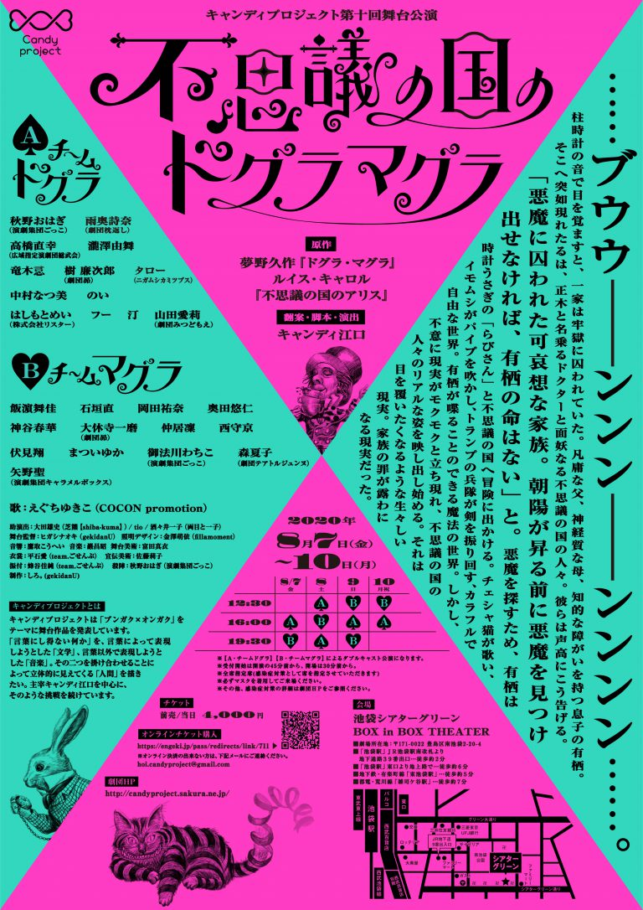

キャンディプロジェクト『不思議の国のドグラマグラ』に出演します！
キャンディプロジェクト第十回舞台公演 近代文学翻案シリーズ第六弾
『不思議の国のドグラマグラ』


翻案・脚本・演出
- キャンディ江口
-
原作：夢野久作『ドグラ・マグラ』／ルイス・キャロル『不思議の国のアリス』
あらすじ
……ブウウ――ンンン――ンンンン……。
柱時計の音で目を覚ますと、一家は牢獄に囚われていた。
凡庸な父、神経質な母、知的な障がいを持つ息子の有栖。
そこへ突如現れたるは、正木と名乗るドクターと面妖なる不思議の国の人々。
彼らは声高にこう告げる。
「悪魔に囚われた可哀想な家族。朝陽が昇る前に悪魔を見つけ出せなければ、有栖の命はない」と。
悪魔を探すため、有栖は時計うさぎの「らびさん」と不思議の国へ冒険に出かける。
チェシャ猫が歌い、イモムシがパイプを吹かし、トランプの兵隊が剣を振り回す、カラフルで自由な世界。
有栖が喋ることのできる魔法の世界。
しかし、不意に現実がモクモクと立ち現れ、不思議の国の人々のリアルな姿を映し出し始める。
それは目を覆いたくなるような生々しい現実。
家族の罪が露わになる現実だった。
公演日時
| 12:30〜 | 16:00〜 | 19:30〜 | |
|---|---|---|---|
| 2020-08-07(金) | ドグラ（A） | マグラ（B） | |
| 2020-08-08(土) | ドグラ（A） | マグラ（B） | ドグラ（A） |
| 2020-08-09(日) | マグラ（B） | ドグラ（A） | マグラ（B） |
| 2020-08-10(月) | マグラ（B） | ドグラ（A） |
- 【Ａ・チームドグラ】【Ｂ・チームマグラ】によるダブルキャスト公演になります。タローはドグラチーム。
- 受付開始は開演の45分前から、開場は30分前から。
- 全席指定席(感染症対策として席を指定させていただきます)
- 必ずマスクを着用してご来場ください。
- その他、感染症対策の詳細は「こちら」をご参照ください。
劇場
- 池袋シアターグリーン BOX in BOX THEATER （※JR池袋駅より徒歩7分）
- アクセス
- Google Map
チケット
- 前売/当日 4,000円
予約
- 演劇パス（こちらがメインの予約窓口です）
- クレジットカードによる、オンライン決済チケット販売になります。
- こちらは劇団共通のURLになりますので、ご予約の際は備考欄に「タロー扱い」とお書きください！
- タロー出演はチームドグラ（Aチーム）です。お間違えなきよう。
- TwitterなどのアプリでURLを開き、決済を行おうとした場合に、英文のエラーメッセージが表示されることがあるようです。大変お手数ですが、ChromeやSafariなどのWebブラウザーで開き直してみてください。それでもエラーの出る場合は、タローへ直接か、劇団あてにお問い合わせください
- カルテットオンライン タロー扱い（クレジットカード決済が出来ない方向け）
キャンディプロジェクトとは
キャンディプロジェクトは「ブンガク×オンガク」をテーマに舞台作品を発表しています。
「言葉にし得ない何か」を、言葉によって表現しようとした「文学」、言葉以外で表現しようとした「音楽」。
その二つを掛け合わせることによって立体的に見えてくる「人間」を描きたい。
主宰キャンディ江口を中心に、そのような挑戦を続けています。
出演者
【出演者】
《Ａ・チームドグラ》
- 秋野おはぎ（演劇集団ごっこ）
- 雨奥詩奈（劇団枕返し）
- 高橋直幸（広域指定演劇団総武会）
- 瀧澤由舞
- 竜木悥
- 樹 廉次郎（劇団昴）
- タロー（ニガムシカミツブス）
- 中村なつ美
- のい
- はしもとめい（株式会社リスター）
- フー
- 汀
- 山田愛莉（劇団みつどもえ）
《Ｂ・チームマグラ》
- 飯濵舞佳
- 石垣直
- 岡田祐奈
- 奥田悠仁
- 神谷春華
- 大休寺一磨（劇団昴）
- 仲居凜
- 西守京
- 伏見翔
- まついゆか
- 御法川わちこ（演劇集団ごっこ）
- 森夏子（劇団テアトルジュンヌ）
- 矢野聖（演劇集団キャラメルボックス）
AB共通
- 歌：えぐちゆきこ（COCON promotion）
スタッフ
- 助演出：大田雄史（芝熊【shiba-kuma】）、tio、酒々井一子（両目と一子）
- 舞台監督：ヒガシナオキ（gekidanU）
- 照明デザイン：金澤萌依（fillamoment）
- 音響：鷹取こうへい
- 音楽：巖昌昭
- 舞台美術：富田真衣
- 衣裳：平石愛（team.ごせんぷ）
- 宣伝美術：佐藤莉子
- 振付：蜂谷佳純（team.ごせんぷ）
- 殺陣：秋野おはぎ（演劇集団ごっこ）
- 制作：しろ。(gekidanU)